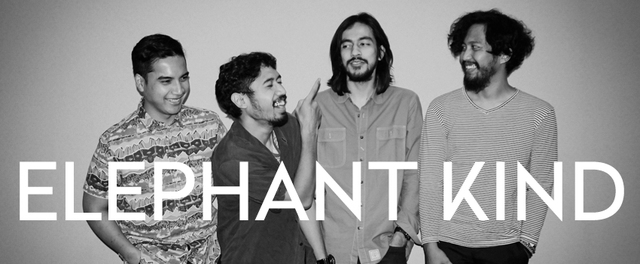
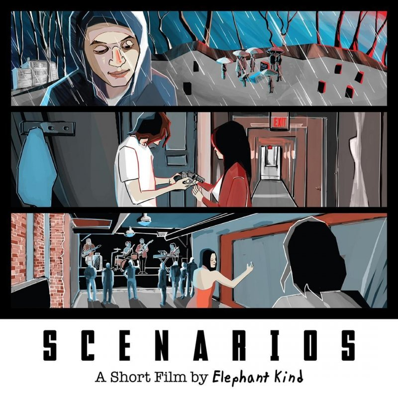

Bertemu dengan kawan-kawan satu visi, menyalurkan skill bermusik, membentuk grup musik dan merangkak karir dari nol memang bukan perkara mudah.
Tak jarang, sebuah band yang belum lama dibentuk harus bongkar pasang personil, mengalami konflik internal dan banyak pula yang jadi one hit wonder untuk selanjutnya
dilupakan orang.
Elephant Kind
Berawal dari tugas akhir sang vokalis, band asal Jakarta ini mulai merintis karirnya dengan sajian menu yang berbeda dari band pop pada umumnya di Indonesia.
Sebelumnya, nama Elephant Kind belum pernah terdengar di hiruk pikuk di dunia musik Indonesia. Namun nada-nada yang mereka sajikan sanggup memunculkan rasa penasaran
untuk mengetahui lebih lanjut dari band mengemas semua liriknya dengan bahasa Inggris.

Meski baru berdiri satu tahun lalu, kolektif ini tidak kalah pamor bahkan semakin hari menjadi terlihat sangat penting di skena musik, khususnya independen.
Situs resmi band yang informatif dan akun sosial media yang terawat menjadi nilai lebih bagaimana Elephant Kind menampilkan dirinya ke hadapan publik.
Dari segi musikalitas, selain memiliki nutrisi pop melankolis yang khas, kemunculan mereka seperti penanda zaman, bahwa ada band se syahdu ini di negeri kita
tercinta pada medio 2015 yang kelak akan bersanding dengan nama-nama seperti Sore, Efek Rumah Kaca hingga Pure Saturday sebagai band kesohor.
Band yang kini tinggal menyisakan Bam Mastro (vokal/gitar), Dewa Pratama (multi instrumentalist/guitar/backing vocal) dan Bayu Adisapoetra (drum)
juga pernah memenangkan penghargaan Favorite Newcomers 2014 dari ICEMA, menjadi sangat wajar mereka mendapat nobel tersebut, berbekal dua mini album
"Scenarios: A Short Film by Elephant Kind" dan "Promenades, A Short Film by Elephant Kind" dan menghasilkan single–single yang sukses seperti We All Lose (Holy Sh*t),
Oh Well, Why Did You Have To Go, dan With Grace mereka pun melesat tajam dan menyebarkan virus Julian Day —tokoh fiksi dalam EP— ke seantero negeri.

Yang menjadi perhatian kami, lewat EP ini mereka menghimpun untuk menjadi rangkaian musik yang memiliki konsep visual. Layaknya plot dalam film,
antar lagu dalam film ini memiliki keterkaitan yang membangun jalan cerita. Lengkap dengan prolog dan suguhan kisah utama. Tokoh utama Julian Day,
mengakhiri hidupnya di usia muda. Meski mengusung tema cerita bunuh diri, Elephant Kind tidak lantas menerjemahkan hal itu ke dalam nuansa musik yang gelap.
Beberapa lagu dibuat dengan konsep narasi dengan latar musik yang lugas. Tidak pernah sebelumnya kami menemukan band lokal membungkus sebuah kematian dengan sangat indah.
" Sometimes i feel like there is something more than i want "
Elephant Kind - Oh Well
Dari segi musik, apa yang dilakukan Elephant Kind sungguh diluar dugaan. Mereka mampu menyeduh bebunyian yang beragam dalam padu musik yang nikmat.
Selintas, Elephant Kind mengingatkan musik dari band-band asal New York bahkan daratan Britania Raya, Kami pun sempat tertipu akan hal ini ketika kali pertama
mendengarkan lagu mereka. Kami pikir lagu yang kami dengarkan berasal dari benua berbeda
Selain itu, Elephant Kind memiliki sepak terjang yang lagi-lagi berbeda atau kami lebih suka menyebutnya sebagai langkah berani,
bekerja sama dengan salah satu filmmaker muda berbakat di Indonesia, Gianni Fajri (Filosofi Kopi) mereka berkolaborasi untuk sebuah film pendek.
Film pendek ini menggambarkan cerita dari karakter fiktif Julian Day. Meski jadwal rilisnya mundur menjadi awal tahun 2016. Tapi tentu saja film ini layak tunggu.
Sebetulnya, akhir bulan November 2015, kami sempat dikejutkan dengan hengkangnya salah satu personil Elephant Kind, John Paul Patton pada bass karena ingin lebih focus
kepada band satunya lagi yaitu Kelompok Penerbang Roket yang juga layak diperhitungkan sebagai nafas baru rock ugal-ugalan dalam negeri. Kami sempat pesimis,
sepertinya band ini akan berakhir, tapi nyatanya justru mereka tidak menampakan kesulitan berati, malah mereka mamasuki fase baru bersama
UNKL347—salah satu clothing ternama—untuk kemudian beriringan dalam NEW WWWORLD ATLAS Scenarios, sebuah bentuk kerjasama yang disinyalir untuk
perkembangan sub-kultur dan pergerakan generasi baru. Dalam moment ini, Elephant Kind merilis single Oh Well dalam versi yang berbeda dan diberi judul
Oh Well (One More Chance).
Catatan lain di luar hal-hal diatas, Elephant Kind juga pernah menginjakan kakinya di panggung bergengsi, seperti Tabik! volume 5 in conjuction with Rocking the Region di
Panggung Outdoor Theatre, Esplanade di Singapura, Maret 2015, Festival musik gagasan ISMAYA Live bertajuk ‘We The Fest’ 9 Agustus 2015 dan berbagi panggung bersama sejumlah
musisi mancanegara mulai dari Echosmith, Rufus, Flight Facilities, Darius, Jessie Ware, Madeon hingga Passion Pit. Serta yang paling hangat, Elephant Kind, didaulat sebagai
pembuka Circa Waves, grup indie rock asal Liverpool, Inggris, yang tampil untuk pertama kalinya di Indonesia pada Oktober kemarin, di Foundry 8, Jakarta Selatan.
Elephant Kind pun bertanggung jawab menjadi imam atas terciptanya koor massal dalam sebuah pentas seni yang diadakan salah satu SMA Di Medan beberapa waktu yang lalu,
bahkan tersiar kabar tiket sebanyak 2000 lembar ludes terjual karena ulah mereka. Kami pikir ini adalah prestasi yang sulit dilakukan oleh band manapun—yang baru genap
satu tahun.

Song by : Elephant Kind - Montage